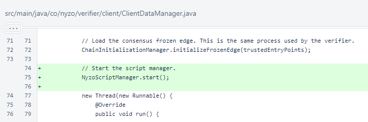
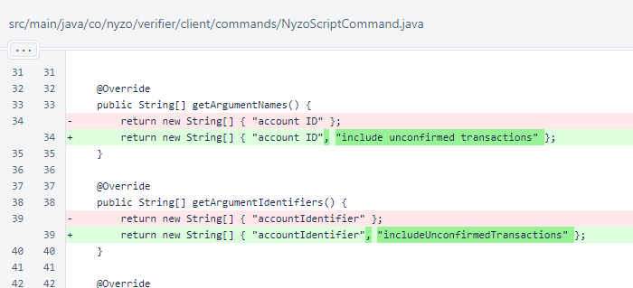
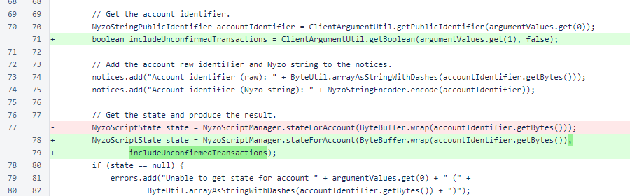
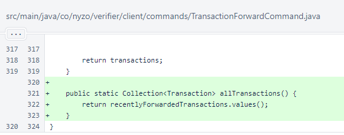
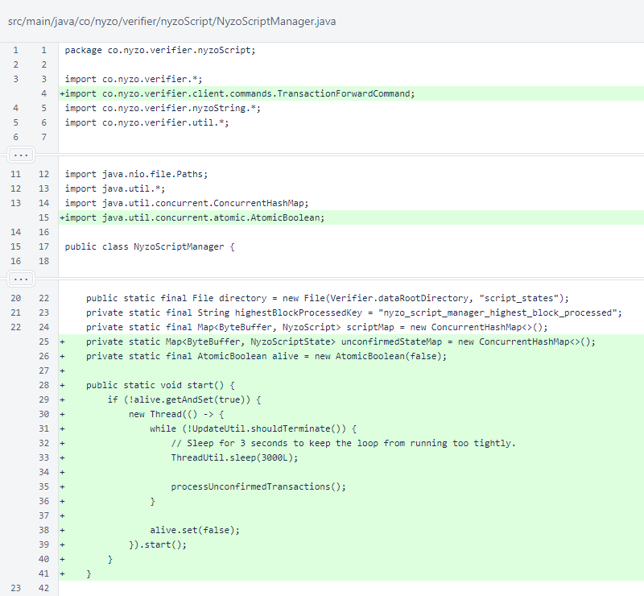
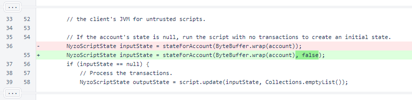
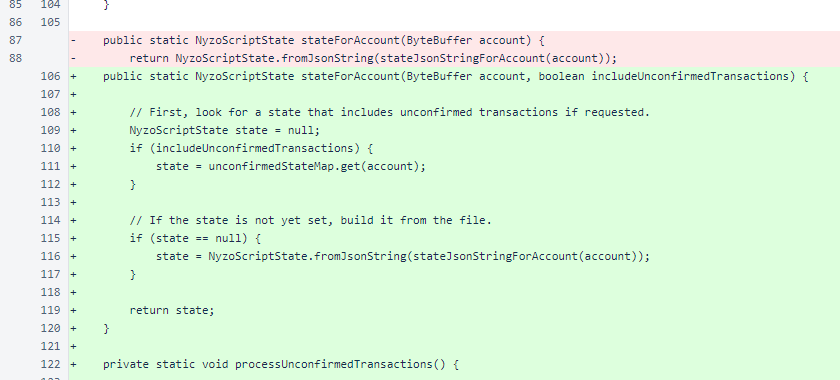
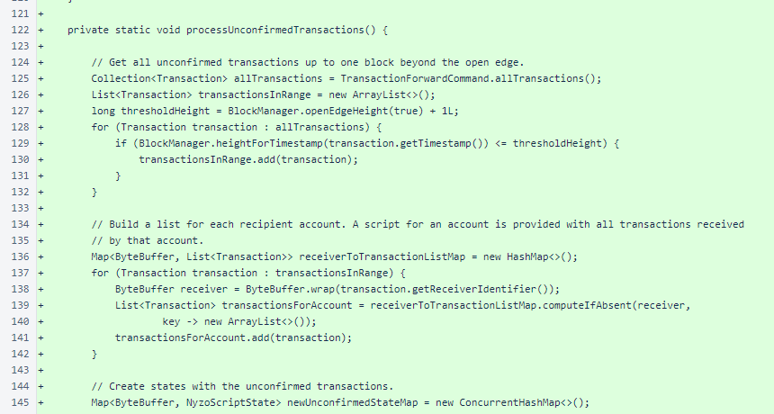
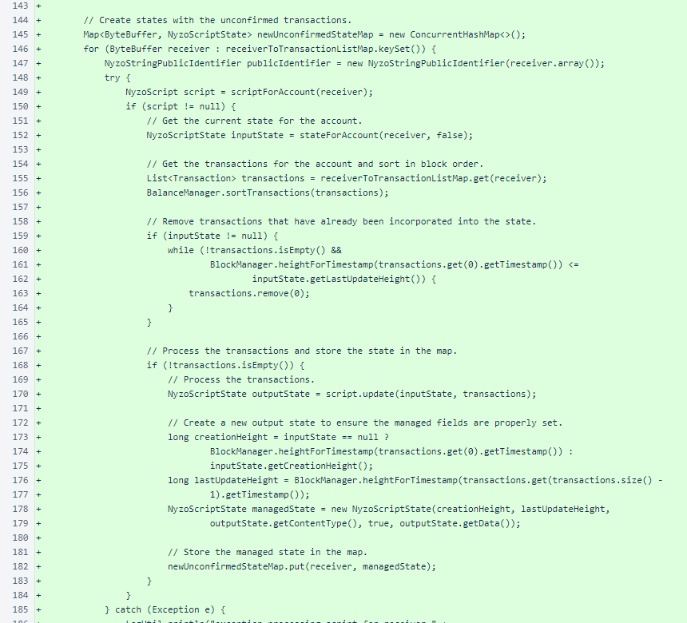
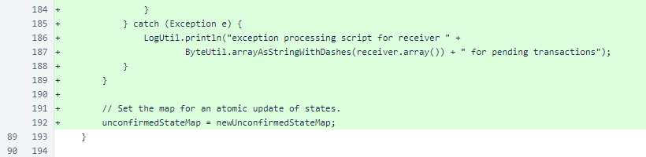

Nyzo 633: unconfirmed script states
Nyzo version 633
(commit on GitHub) adds an option the NyzoScript
Command to return script states that include information from unconfirmed (pending) transactions.
This version affects the client.
Those who followed development of the tic-tac-toe Micropay game example will
recall that gameplay was rather slow in the initial implementation. Moves did not appear until the transactions
representing them were confirmed by the cycle. Version 623 provided an option for the
TransactionIndexedSearchCommand to return pending transactions in
addition to confirmed transactions, which made gameplay almost instant.
This version adds a similar improvement to the NyzoScriptCommand. An option
to include unconfirmed transactions in script results allow users to see the effects of those transactions almost
immediately.
In ClientDataManager.start(), the Nyzo
ScriptManager.start() method is called.

An argument to request inclusion of unconfirmed transactions was added to NyzoScript
Command.

When running NyzoScriptCommand, the new argument is read and passed to
NyzoScriptManager.stateForAccount(). The default value of this
argument is false, which means that behavior of this command does not change for users
who do not provide a value.

The allTransactions() method was added to the
TransactionForwardCommand to provide access to the pool of pending
transactions.

The NyzoScriptManager.start() method starts a thread that runs a loop
for processing scripts with unconfirmed transactions. Currently, the loop sleeps 3 seconds each iteration. To
improve responsiveness of script states, this sleep will likely be reduced in duration after some protections are
implemented to ensure excessive resources are not consumed by this thread.

In initial state creation, a false argument was added to the
stateForAccount() method call. This results in the method call behaving as it
did previously.

In NyzoScriptManager.stateForAccount(), the new
includeUnconfirmedTransactions argument causes the method to look to the
unconfirmedStateMap for a state that includes information from unconfirmed
transactions. If this argument is false or if the state is not present in the
unconfirmedStateMap, the state is read from file.

The NyzoScriptManager.processUnconfirmedTransactions() method
is the unconfirmed-transaction equivalent of NyzoScriptManager.process
BlockInternal(). This method retrieves transactions from the Transaction
ForwardCommand and builds lists of transactions grouped by recipient.

NyzoScriptManager.processUnconfirmedTransactions() then
creates states with the unconfirmed transactions. The resulting states are stored in a map for later retrieval.

Exceptions are logged. At the end of the method, the newUnconfirmedState
Map is swapped to replace the unconfirmedStateMap. This is an atomic
swap, which eliminates any potential for threading issues.

In NyzoScriptManager.processBlockInternal(), a
false argument was added to the stateFor
Account() method call. This results in the method call behaving as it did previously.